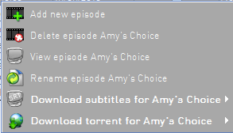
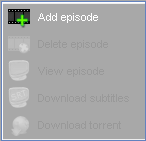

| The Episodes Panel PopUp Menu |
|---|
|  |
 |
| Enabled popup menu |
Disabled popup menu |
When right clicking on the [Episodes Panel]
the episodes popup menu is shown.
If the clicking is on an episode row the enabled popup menu is shown else the disabled one.
The following menu items are available:
- Add New Episode:Brings up the [Add new Episode Panel]
for adding a new episode of the current series in the database.
- Delete Episode:Deletes the current episode from the database.
- View Episode:Opens the selected episode in the default media player application. The path to the local folder
that contains the episodes must be provided in [Add/Edit Series Panel]
- Download Episode subtitlesIf the www.tvsubtitles.net webpage address is provided
(in [Add/Edit Series Panel]) the application connects and downloads the subtitles
of the episode.The language depends on the selected option in [Internet Options].
If the primary language is not found the application will try to download the secondary one. If it's found and the local directory
of the series is provided the srt file will be extracted there. If multiple subtitles are found you will prompt to choose which subtitle to
download.
If the local directory is not provided or direct access to subtitle file is denied by the tvsubtitles.net server the default internet browser
will open and download the file.
- Download episode torrent fron eztv.itBrings up the [Download Torrent] form
which lets you search eztv for the specific episode.
|